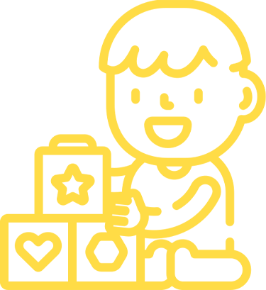

A partir do Maternal
Educação Infantil
Os primeiros anos merecem cuidado especial. Na Educação Infantil do IEPI, cada descoberta é vivida com acolhimento, estímulo e atenção, em um ambiente pensado para a criança se sentir parte de uma história especial.
- Acolhimento
- Brincar e descobrir
- Período integral
Conhecer a Educação Infantil
1º ao 5º ano
Ensino Fundamental I
No IEPI, o aprendizado acontece com atenção, planejamento e dedicação para que cada aluno avance com segurança. Leitura, projetos e convivência fazem parte da rotina.
- Proposta pedagógica
- Educação financeira
- Esportes e artes
Conhecer o Fundamental I
6º ao 9º ano
Ensino Fundamental II
Mais autonomia e novos desafios, com acompanhamento de perto. Olimpíada de Português, Interclasse, empreendedorismo e projeto de vida ajudam cada estudante a descobrir o próprio potencial.
- Projeto de vida (OPEE)
- Empreendedorismo
- Olimpíadas
Conhecer o Fundamental II